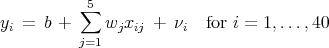
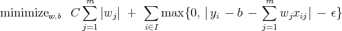

Case Study:
Drug Design and Development Inc
Students may work in groups of up to three people. You may consult only your textbooks, your notes, online information about AMPL, and me.
Drug Design and Development Inc (DDD) designs novel medicines. They have experimented with various compounds and they’d like to determine how to combine various parts of these compounds in order to create a more effective medicine.
Each compound contains several different factors in various known proportions, and the efficacy of each compound is measured. The aim is to determine the impact of the factors on the overall response.
DDD is particularly interested in the impact of five factors, and has measured the response for 40 different compounds. The responses yi to each of the compounds i = 1,…, 40 and the amounts xij of each factor j = 1,…, 5 in each of the compounds i = 1,…, 40 can be found online:
As a first pass, they want to fit a linear model with parameters wj for the factors j = 1,…, 5. They also believe there could be a constant offset b in the performance of the compounds, so the model they chose is:
|  | (1) |
where νi denotes the error in the calculated response to the ith compound.
A standard regression model would seek to minimize the sum of the squares of the errors νi. DDD wishes to use an alternative. In particular, because of the difficulty of measuring the data exactly, DDD has decided to use an ϵ-tube regression model. In this model, only errors greater than ϵ are counted, where ϵ is a parameter. DDD will look to minimize the sum of all errors greater than ϵ.
Further, the width of the tube can be increased by increasing the norm of w. Thus, to regularize the model, a penalty term is added consisting of the 1-norm of w, scaled by a parameter C. Summing up, DDD wishes to choose b and w to
|  | (2) |
for the m = 5 factors and the set of I = {1,…, 40} compounds.
There is some variability in the response to any given compound. One concern with constructing a regression model is overfitting the data: the response variability is ignored and the observed response is taken to be more accurate than is justified. The effect is that the model gives a very accurate fit for the 40 data points, but does not predict the outcome value for subsequent compounds very well.
One technique used to overcome this phenomenon is cross-validation. We look at 2-fold cross-validation, where the data are split into two equal sized sets. Model (2) is solved for just i = 1,…, 20 (the training data) and the resulting choice of b and w is checked by using it to calculate the errors νi for samples i = 21,…, 40 (the testing data). The roles of samples 1,…, 20 and 21,…, 40 are then reversed. If the model is good for the testing data then it is accepted; otherwise the parameters C and ϵ are modified and the process repeated.
This leads to a procedure for calculating the value of a particular choice of C and ϵ:
Give the optimal values of b and w for each choice. How do the solutions compare?
ampl: reset;
ampl: model chips.mod;
ampl: data chips.dat;
ampl: reset data;
ampl: data chips.dat;
(OS) ampl
ampl: model sample/steel.mod;
ampl: data sample/steel.dat;
ampl: solve;
MINOS 5.4: optimal solution found.
2 iterations, objective 192000
ampl: let rate["bands"]:=250;
ampl: solve;
MINOS 5.4: optimal solution found.
1 iterations, objective 217200